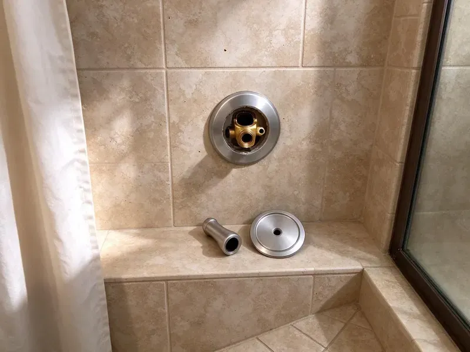

Toilet Replacement in Clinton, MS
Swap a 3.5 gallon toilet for a 1.28 gallon WaterSense model. DFM Plumbing handles toilet replacement across Clinton, MS.
- Floors Protected
- Upfront Pricing
- Insured Plumbers
- Licensed Plumbers

Trade Up to a Better Toilet in Clinton, MS
Call DFM Plumbing for straight advice on which toilet to buy.
Toilet Replacement in Clinton, MS
DFM Plumbing recommends toilets by how they flush, not by markup, and we point you to models with a 3 inch flush valve and a MaP score that keeps double flushes rare. Builder-grade can be fine. Premium one-piece toilets make sense for some bathrooms, and we will say which category fits yours.
Our expertise includes:
- Supply and drain connections that meet code
- ADA-compliant toilet installs
- Angle stop and supply line replacement

Additional Bathroom Plumbing Services in Clinton, MS
From toilets to showers, our bathroom plumbing team in Clinton, MS handles repairs, installs, and upgrades with tidy, code-compliant work.


Customers
Why Choose DFM Plumbing for Toilet Replacement in Clinton, MS?
One visit covers removal, installation, testing and haul-away, so you are not left with a toilet on the lawn or a box in the hallway. Scheduling is simple. Expect about two hours for a standard swap, and the bathroom gets cleaned before we leave.
- Quality Brands, We install TOTO and Kohler plus other major brands.
- Upfront Pricing, You get a flat price before any work begins, with no add-ons.
- Licensed Plumbers, Our plumbers set toilets every week, from wax rings to flange repairs.
Citywide Coverage
Businesses in Clinton get the same coverage as homes, with commercial bowls and flushometers replaced before opening or after close so customers never see a closed restroom sign. Weekend work is available too. Just tell us your hours when you call.
Experienced Team
Each technician knows which current toilet models flush reliably and which ones bring callbacks, because they are the ones who get called back. That knowledge goes into our recommendations. You avoid a new toilet that clogs like the old one.
Safety-First Approach
Sewer gas is the hazard people forget, so the open drain gets plugged with a rag the moment the old toilet comes up and stays plugged until the new seal goes on. We wear gloves the whole time. The flange area gets disinfected before the new seal goes down.
Trusted Certified Clinton Plumbing Services Professionals
At DFM Plumbing, we are proud to offer certified plumbing services throughout Clinton, MS. Credentials matter in this trade. Our plumbers hold recognized industry credentials, and they follow strict safety and quality rules on every repair, installation and maintenance call we run.
Call Us Now PHCC Plumbing Contractor Recognition
PHCC Plumbing Contractor Recognition Better Business Bureau (BBB) Accreditation
Better Business Bureau (BBB) Accreditation Angi Certified Pro
Angi Certified Pro ISO 9001 Quality Management Certification
ISO 9001 Quality Management CertificationToilet Replacement Work in Clinton, MS
ADA and Commercial Toilet Replacement in Clinton, MS
Public restrooms need bowls rated for heavy use, and many need to meet ADA height and clearance rules when a fixture is replaced. We confirm the clearances before ordering. Adding a sensor flush valve during the swap takes little extra time, and they cut down on unflushed bowls.

Replacing Pressure-Assisted Toilets in Clinton, MS
Pressure-assisted toilets use a sealed vessel in the tank that stores air under line pressure and pushes water through the bowl hard, which helps in houses with long, low-slope drain runs. They are loud. When we replace one, we pick a vessel brand with parts that are easy to get later, and we check that house pressure is in the range the unit needs.
Toilet Flange Repair During Replacement in Clinton
Pulling the old toilet is the only chance to see the flange, and a cracked plastic ring or a rusted cast iron flange will ruin a new install within a year. We check it every time. A split ring gets a stainless repair ring, while a flange that sits below the finished floor gets a spacer or extender so the seal compresses properly.
What a Standard Swap Includes in Clinton
The swap itself runs about two hours: water off, tank drained, old toilet out, flange scraped and inspected, new toilet set on a fresh seal, and a braided stainless supply line connected. Then we level it. The base gets caulked, with a small gap left at the back so any future leak shows up instead of hiding under the floor.
Commercial Toilet Replacement in Clinton, MS
Office and retail restrooms wear out toilets faster than any house, and a replacement there usually means a floor-mount or wall-hung bowl with a flushometer instead of a tank. Work gets scheduled around your business hours. We match the bowl to the gallons per flush on the valve, since a mismatch leaves waste behind or wastes water.
Rental and Multi-Unit Toilet Replacement in Clinton, MS
Landlords with several units do better standardizing on one toilet model with common parts, because the next flapper or fill valve is then the same part in every unit. We can replace several toilets in one visit. Tenants keep a working bathroom. We coordinate entry directly with them, so you do not have to be there.
High-Efficiency Toilet Installation in Clinton, MS
Toilets made before 1994 often use 3.5 gallons a flush, and some from the 1970s use five or more. A WaterSense model uses 1.28 gallons or less, and the better ones still clear the bowl in one try because the trapway and flush valve are larger than they used to be. Savings show up fast. Some water providers offer a rebate, so ask before you buy.

High-Efficiency Toilet (HET) Upgrades in Clinton, MS
High-efficiency toilets carry a WaterSense label and a MaP score, which tells you how many grams of waste the toilet clears in one flush. Look for a score of at least 800. A high score means fewer double flushes and fewer clogs, and that is where the real water savings come from.
Toilet Replacement Near Me in Clinton, MS
Searching for toilet replacement near me usually means the old one has cracked, keeps clogging or has needed one repair too many in the last few years. You can get a price range over the phone, and our plumbers carry common models on the truck around Clinton, MS. Many swaps happen the same day. Homes around Clinton on wells or small rural water systems should test their water before choosing a treatment system.
Calls get answered by a person who asks the questions that matter for a toilet swap, like the rough-in, the seat height, the bowl shape you want and whether there is a second bathroom. Those answers set the schedule. Homes with one toilet get moved up the list.
DFM Plumbing at a Glance
- Fully licensed plumbing team covering Clinton, MS
- Same-day appointments and 24/7 emergency response
- Upfront, flat-rate pricing before work begins
- 4.8-star rated by 503+ Mississippi customers
Clinton Map
Clinton Information
- Population
- 26,698
- Area codes
- Local
- Service area
- Clinton and towns within a 40 mile drive
- Nearby
- Jackson, Ridgeland, Madison, Pearl
Swapping an old toilet in Clinton, MS for a WaterSense model is one of the simplest ways to cut household water use and lower the monthly bill.
Expert Services
Call DFM Plumbing for reliable plumbing work done by licensed pros in Clinton, MS.
Our Specialized Plumbing Services in Clinton, MS
At DFM Plumbing, we handle the full list of plumbing services across Clinton, MS. From leak detection to full system installs, our team works fast and charges fair prices on homes and commercial properties alike. Take a look at our core services below:


How a Toilet Replacement Works in Clinton, MS
Here is how a toilet replacement normally goes, start to finish.
Schedule the Swap
Reach us at (601) 265-9260. We book a time that works for you and confirm the price.
Remove the Old Toilet
We shut off the water, empty the tank and pull the old toilet and protect the floor.
Set the New One
The new toilet goes on a new wax ring with new bolts, then we check for leaks and a strong flush.
Frequently Asked Questions About Toilet Replacement in Clinton
Expect roughly $350 to $800 for a standard, chair height or high-efficiency toilet installed, with the old one removed and hauled away. Rusted flanges and tight spaces push it higher. You get a firm number up front.
Yes. Removal and disposal of the old toilet and all packaging are in the price.
Plenty. A WaterSense model is capped at 1.28 gallons per flush, and dual-flush toilets add a half flush of around 0.8 to 1.1 gallons for liquids, which can cut usage further in a busy home. Check the MaP score before buying.
Replacement wins when repair costs start to approach the price of a new toilet, or when the toilet is old enough to waste water every time it flushes. A cracked tank or bowl settles the question. Frequent clogs and a rocking base point the same way.
Our workmanship is guaranteed, and the toilet carries its own manufacturer warranty, which differs by brand and usually covers the china longer than the tank parts. If a leak traces back to our install, we return and fix it. Keep the invoice and the box label.
Plan on two to four hours if the flange or subfloor needs work, and closer to two for a clean swap with a solid flange. The bathroom is back in service the same day. Testing happens before we pack up.
Handy homeowners can do it, but the trouble starts when the old toilet comes off and the flange turns out to be cracked or sitting below the new floor. That is where most DIY installs go wrong. Cranking the closet bolts too tight is the other common error, and that one cracks a new bowl.
A like-for-like replacement in the same spot generally does not. Moving drains or adding a bathroom usually does.
Hear From Customers Who Hired Our Plumbing Experts

Daniel K.
A pipe burst in the garage ceiling at 11 at night. Someone answered on the second ring, and the plumber was in my driveway about fifty minutes later. He shut off the main, cut out the split section, and had water back on before 2 am.
Emergency Plumbing · Pearl, MS
Diane F.
My kitchen faucet had dripped for months and I finally got tired of hearing it at night. DFM Plumbing came out the next morning, replaced the cartridge and the O rings, and tightened a loose base that was letting water under the sink.
Faucet Repair · Ridgeland, MSPatricia H.
We had a slab leak that two other companies could not find. DFM Plumbing located it in under an hour with a listening device. They rerouted the line through the attic instead of breaking up the floor, so we kept our kitchen tile.
Slab Leak Repair · Pearl, MS
Paul B.
Our pit pump ran nonstop even in dry weather. The plumber found the check valve was stuck open, so the same water kept cycling back into the pit. New valve, new float switch, done in an hour. It runs quiet now.
Sump Pump · Pearl, MSCarlos V.
Our house still had galvanized pipe, and upstairs the shower was a trickle. The crew repiped everything in PEX over three days and patched every drywall hole before they left. The pressure difference is night and day.
Repiping · Clinton, MS
Sofia M.
Two new toilets went in during one visit. The tech set them on new wax rings and swapped the old supply lines. He also noticed our bathroom faucet dripping and replaced the cartridge while he was there. No mess left behind.
Toilet Installation · Vicksburg, MS